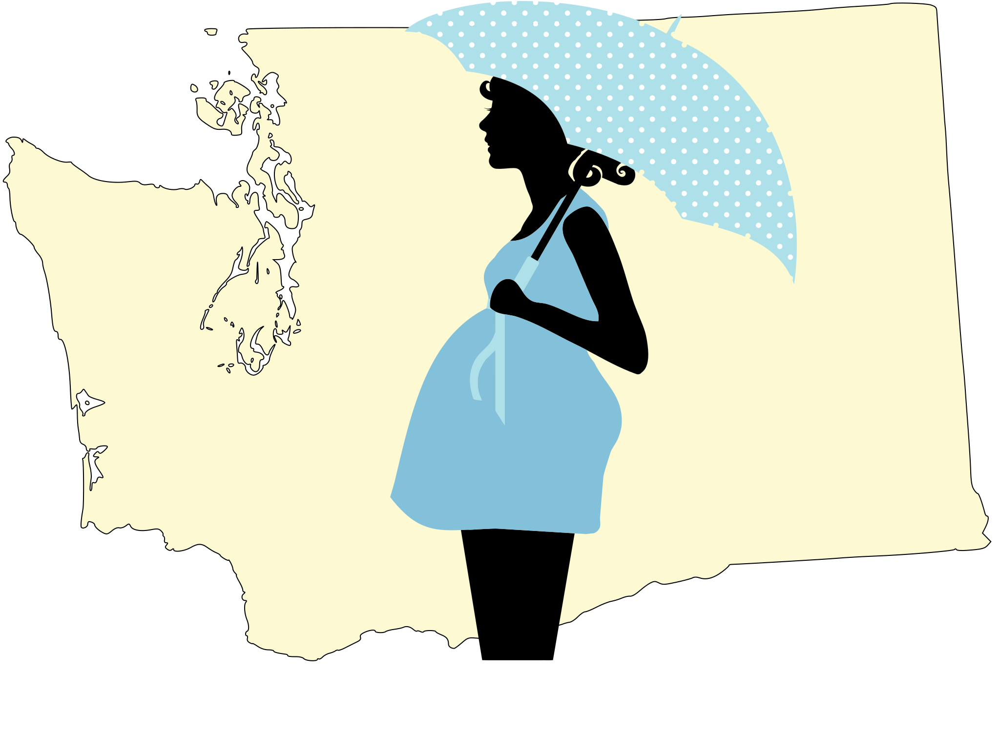

<!-- Copyright (c) 2017 Pregnancy Aid of Washington State -->
<div class="navbar navbar-inverse navbar-fixed-top">
    <div class="container">
        <div class="navbar-header">
            <button type="button" class="navbar-toggle btn btn-info" data-toggle="collapse" data-target="#navbar">
                Menu
                <!--<span class="icon-bar"></span>
                <span class="icon-bar"></span>
                <span class="icon-bar"></span>-->
            </button>
            <a class="navbar-brand" href="./index.shtml">
                
            </a>
        </div>
        <div id="navbar" class="navbar-collapse collapse">
            <ul class="nav navbar-nav">
                <li><a href="./index.shtml">Home</a></li>
                <li><a href="./GetHelp.shtml">Get Help</a></li>
                <!-- or href="https://www.google.com/maps/search/pregnancy+aid+of+washington/@46.9954327,-123.367592,9z" -->
                <li><a href="./FindUs.shtml">Find Us</a></li>
                <li><a href="./WhoWeAre.shtml">Who We Are</a></li>
                <li><a href="./Donate.shtml">Donate</a></li>
                <li><a href="./Volunteer.shtml">Volunteer</a></li>
            </ul>
        </div>
    </div>
</div>
